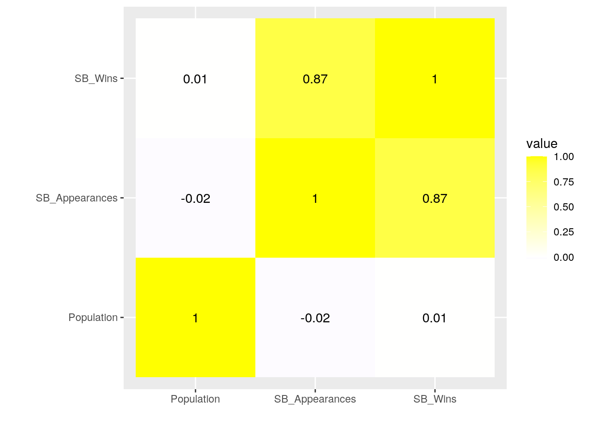
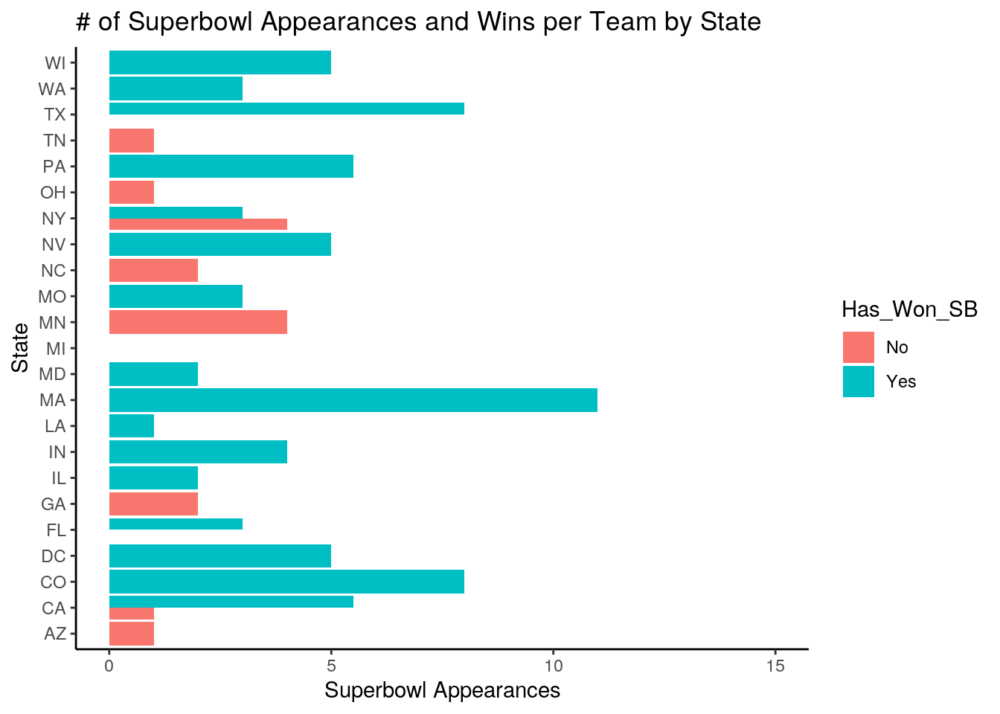
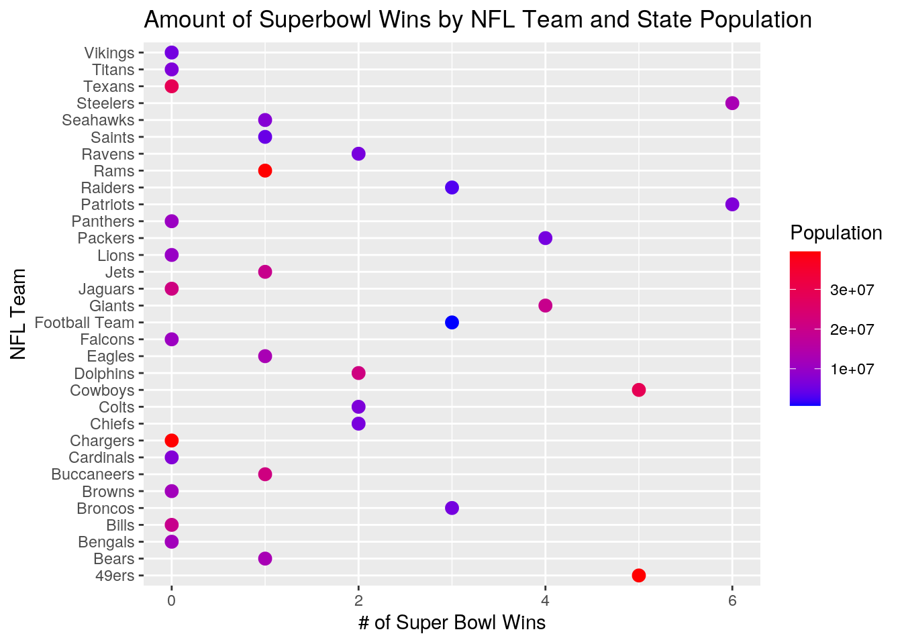
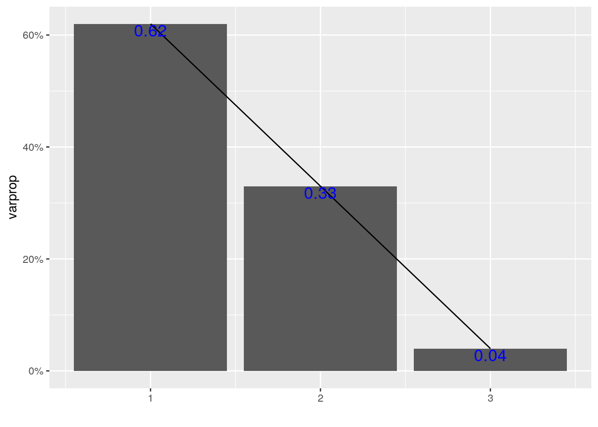
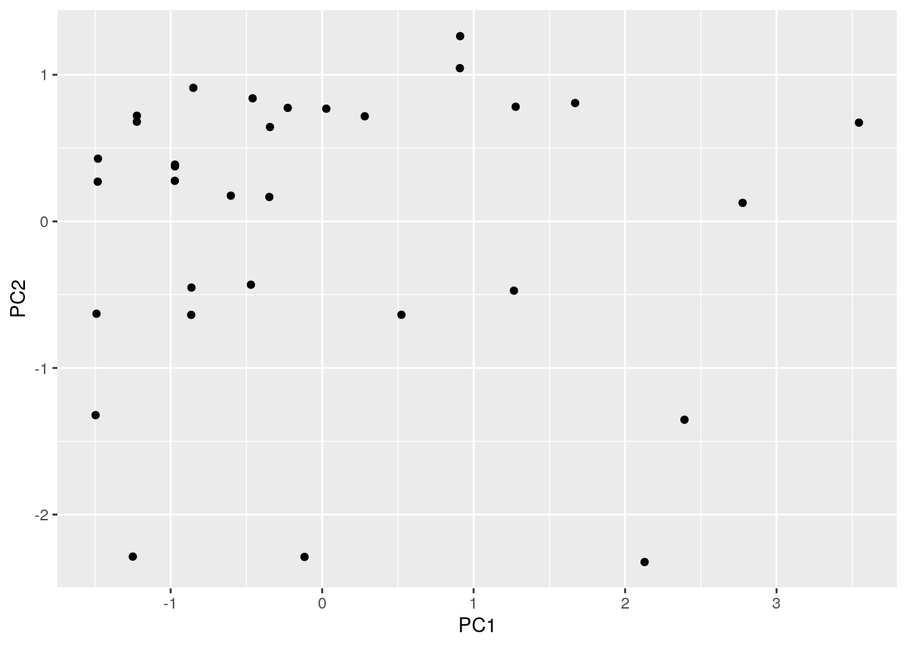

Devin Williams DKW732 Project 1
Introduction: The datasets I have chosen to observe are the Fball and State_POP dataset. The Fball dataset contains the variables of State,the state where the NFL team resides if applicable,NFL_Team, the NFL team being analyzed, SB_Appearances, the number of Superbowl appearance for the NFL team, and SB_Wins, the amount of Superbowls won by the NFL team. The State_POP dataset contains the variables of State and Population. These datasets were made by me in a googlesheet after researching the location and Superbowl record of each team, and population of each state.The websites visited for this data were https://state.1keydata.com/nfl-teams-by-state.php,https://www.statista.com/statistics/266516/number-of-super-bowl-wins-by-nfl-team/,https://www.statista.com/statistics/784497/teams-ranked-by-super-bowl-appearances-in-nfl-history/, and https://www.infoplease.com/us/states/state-population-by-rank. The datasets were interesting to me because I find obscure sports trivia reall amusing, and wanted to analyze if larger population areas yielded more Superbowl wins.
library(readr)
Fball <- read_csv("Copy of Football Team (NO CITY)_NO SBW - Sheet1 (2).csv")## Parsed with column specification:
## cols(
## State = col_character(),
## NFL_Team = col_character(),
## SB_Appearances = col_double(),
## SB_Wins = col_double()
## )head(Fball)## # A tibble: 6 x 4
## State NFL_Team SB_Appearances SB_Wins
## <chr> <chr> <dbl> <dbl>
## 1 AL <NA> NA NA
## 2 AK <NA> NA NA
## 3 AZ Cardinals 1 0
## 4 AR <NA> NA NA
## 5 CA Rams 4 1
## 6 CA Chargers 1 0library(readr)
State_POP <- read_csv("State POP - Sheet1 (1).csv")## Parsed with column specification:
## cols(
## State = col_character(),
## Population = col_number()
## )head(State_POP)## # A tibble: 6 x 2
## State Population
## <chr> <dbl>
## 1 AL 4903185
## 2 AK 731545
## 3 AZ 7278717
## 4 AR 3017825
## 5 CA 39512223
## 6 CO 5758736library(tidyverse)## ── Attaching packages ────────## ✓ ggplot2 3.3.2 ✓ dplyr 1.0.2
## ✓ tibble 3.0.3 ✓ stringr 1.4.0
## ✓ tidyr 1.1.1 ✓ forcats 0.5.0
## ✓ purrr 0.3.4## ── Conflicts ─────────────────
## x dplyr::filter() masks stats::filter()
## x dplyr::lag() masks stats::lag()Football<-Fball%>%full_join(State_POP)## Joining, by = "State"FBall_States<-Football%>%filter(!is.na(NFL_Team))I used a full join to join my datasets by the "State" variable because I wanted to keep all of the rows in both bottom and omitted all of the rows that did not have an NFL team. The potenial problem of this is that when trying to find the mean of Superbowl wins or appearances, it does not take into account states without a football team.
FBall_States%>%summarize_all(n_distinct)## # A tibble: 1 x 5
## State NFL_Team SB_Appearances SB_Wins Population
## <int> <int> <int> <int> <int>
## 1 23 32 9 7 23FBall_States%>%group_by(NFL_Team)%>%summarize(max_SB_wins=max(SB_Wins))%>%arrange(-max_SB_wins)## `summarise()` ungrouping output (override with `.groups` argument)## # A tibble: 32 x 2
## NFL_Team max_SB_wins
## <chr> <dbl>
## 1 Patriots 6
## 2 Steelers 6
## 3 49ers 5
## 4 Cowboys 5
## 5 Giants 4
## 6 Packers 4
## 7 Broncos 3
## 8 Football Team 3
## 9 Raiders 3
## 10 Chiefs 2
## # … with 22 more rowsSB_PCT<-FBall_States%>%mutate(SB_W_PCT=SB_Wins/SB_Appearances)
SB_PCT%>%filter(SB_W_PCT==1)%>%group_by(State,NFL_Team)## # A tibble: 4 x 6
## # Groups: State, NFL_Team [4]
## State NFL_Team SB_Appearances SB_Wins Population SB_W_PCT
## <chr> <chr> <dbl> <dbl> <dbl> <dbl>
## 1 FL Buccaneers 1 1 21477737 1
## 2 LA Saints 1 1 4648794 1
## 3 MD Ravens 2 2 6045680 1
## 4 NY Jets 1 1 19453561 1SB_PCT%>%filter(SB_Appearances>0)%>%filter(SB_W_PCT==0)%>%arrange(-SB_Appearances)## # A tibble: 8 x 6
## State NFL_Team SB_Appearances SB_Wins Population SB_W_PCT
## <chr> <chr> <dbl> <dbl> <dbl> <dbl>
## 1 MN Vikings 4 0 5639632 0
## 2 NY Bills 4 0 19453561 0
## 3 GA Falcons 2 0 10617423 0
## 4 NC Panthers 2 0 10488084 0
## 5 OH Bengals 2 0 11689100 0
## 6 AZ Cardinals 1 0 7278717 0
## 7 CA Chargers 1 0 39512223 0
## 8 TN Titans 1 0 6833174 0FBall_States %>%group_by(State) %>%summarize(sum_SB_wins=sum(SB_Wins,na.rm=T))## `summarise()` ungrouping output (override with `.groups` argument)## # A tibble: 23 x 2
## State sum_SB_wins
## <chr> <dbl>
## 1 AZ 0
## 2 CA 6
## 3 CO 3
## 4 DC 3
## 5 FL 3
## 6 GA 0
## 7 IL 1
## 8 IN 2
## 9 LA 1
## 10 MA 6
## # … with 13 more rowsSB_Wins_State<-FBall_States %>%group_by(State) %>%summarize(sum_SB_wins=sum(SB_Wins,na.rm=T))## `summarise()` ungrouping output (override with `.groups` argument)SB_Wins_State%>%arrange(-sum_SB_wins)## # A tibble: 23 x 2
## State sum_SB_wins
## <chr> <dbl>
## 1 PA 7
## 2 CA 6
## 3 MA 6
## 4 NY 5
## 5 TX 5
## 6 WI 4
## 7 CO 3
## 8 DC 3
## 9 FL 3
## 10 NV 3
## # … with 13 more rowsFBall_States %>%group_by(State) %>%summarize(mean_SB_wins=mean(SB_Wins,na.rm=T))%>%arrange(-mean_SB_wins)## `summarise()` ungrouping output (override with `.groups` argument)## # A tibble: 23 x 2
## State mean_SB_wins
## <chr> <dbl>
## 1 MA 6
## 2 WI 4
## 3 PA 3.5
## 4 CO 3
## 5 DC 3
## 6 NV 3
## 7 TX 2.5
## 8 CA 2
## 9 IN 2
## 10 MD 2
## # … with 13 more rowsFBall_States %>%filter(State=="PA")%>%select(SB_Wins,NFL_Team)## # A tibble: 2 x 2
## SB_Wins NFL_Team
## <dbl> <chr>
## 1 1 Eagles
## 2 6 SteelersFBall_States %>%filter(State=="MA")%>%select(SB_Wins,NFL_Team)## # A tibble: 1 x 2
## SB_Wins NFL_Team
## <dbl> <chr>
## 1 6 PatriotsFBall_States %>%group_by(NFL_Team)%>%summarize(max_SB_app=max(SB_Appearances))%>%arrange(-max_SB_app)## `summarise()` ungrouping output (override with `.groups` argument)## # A tibble: 32 x 2
## NFL_Team max_SB_app
## <chr> <dbl>
## 1 Patriots 11
## 2 Broncos 8
## 3 Cowboys 8
## 4 Steelers 8
## 5 49ers 7
## 6 Dolphins 5
## 7 Football Team 5
## 8 Giants 5
## 9 Packers 5
## 10 Raiders 5
## # … with 22 more rowsFBall_States %>%group_by(NFL_Team)%>%summarize(max_SB_app=max(SB_Appearances))%>%arrange(max_SB_app)## `summarise()` ungrouping output (override with `.groups` argument)## # A tibble: 32 x 2
## NFL_Team max_SB_app
## <chr> <dbl>
## 1 Browns 0
## 2 Jaguars 0
## 3 Lions 0
## 4 Texans 0
## 5 Buccaneers 1
## 6 Cardinals 1
## 7 Chargers 1
## 8 Jets 1
## 9 Saints 1
## 10 Titans 1
## # … with 22 more rowsFBall_States %>%summarize(median_SB_app=median(SB_Appearances))## # A tibble: 1 x 1
## median_SB_app
## <dbl>
## 1 3FBall_States %>%summarize(mean_SB_app=mean(SB_Appearances))## # A tibble: 1 x 1
## mean_SB_app
## <dbl>
## 1 3.38FBall_States %>%summarize(median_SB_wins=median(SB_Wins))## # A tibble: 1 x 1
## median_SB_wins
## <dbl>
## 1 1FBall_States %>%summarize(mean_SB_wins=mean(SB_Wins))## # A tibble: 1 x 1
## mean_SB_wins
## <dbl>
## 1 1.69Appearanceless<-FBall_States%>% group_by(NFL_Team)%>%summarize(min_SB_appearance=min(SB_Appearances))%>%arrange(min_SB_appearance)## `summarise()` ungrouping output (override with `.groups` argument)Winless<-FBall_States%>%filter(SB_Wins==0)%>% group_by(NFL_Team)%>%summarize()## `summarise()` ungrouping output (override with `.groups` argument)Appearanceless## # A tibble: 32 x 2
## NFL_Team min_SB_appearance
## <chr> <dbl>
## 1 Browns 0
## 2 Jaguars 0
## 3 Lions 0
## 4 Texans 0
## 5 Buccaneers 1
## 6 Cardinals 1
## 7 Chargers 1
## 8 Jets 1
## 9 Saints 1
## 10 Titans 1
## # … with 22 more rowsWinless## # A tibble: 12 x 1
## NFL_Team
## <chr>
## 1 Bengals
## 2 Bills
## 3 Browns
## 4 Cardinals
## 5 Chargers
## 6 Falcons
## 7 Jaguars
## 8 Lions
## 9 Panthers
## 10 Texans
## 11 Titans
## 12 VikingsFBall_States%>%filter(SB_Wins==0)%>%summarize(median_pop= median(Population))## # A tibble: 1 x 1
## median_pop
## <dbl>
## 1 11153262.FBall_States%>%filter(SB_Wins>0)%>%summarize(median_pop=median(Population))## # A tibble: 1 x 1
## median_pop
## <dbl>
## 1 10143357There are 32 Football Teams across 22 states and Washington,DC. The two teams with the most SB wins, are the Patriots and the Steelers. There are 4 teams who have not lost in their SB appearances, the Buccaneers, Saints, Ravens, and Jets. The Vikings and Bill have both been to the Superbowl four times but has yet to win a championship. The state of Pennsylvania has the most SB wins. However, Massachusetts has the highest average of SB Wins due to all of their Superbowl wins coming from the Patriots, while the Steelers have 6 SB wins and the Eagles only have 1. The Patriots have also had the most SB appearances with 11. The Browns, Jaguars, Lions, and Texans have never had a Superbowl appearance. Meanwhile, the Bengals, Bills, Cardinals, Chargers, Falcons, Panthers, Titans, and Vikings.
The mean and median of Superbowl appearances are 3.375 and 3, respectively, while the mean and median of Superbowl wins are 1.688 and 1, respectively. The mean and median of these two variables were almost identical, so that means that the Superbowl appearance and wins of the league are symmetrically distributed. Also, the median population of states that have won a SB and have not won an SB is 10143357 and 11153262, respectively.
FBall_States %>% select_if(is.numeric)%>% cor(use = "everything")%>% as.data.frame()%>% rownames_to_column()%>% pivot_longer(-1)%>% ggplot(aes(rowname,name,fill=value))+
geom_tile()+geom_text(aes(label=round(value,2)))+
xlab("")+ylab("")+coord_fixed()+scale_fill_gradient2(low = "Blue", high = "Yellow") There is a strong correlation between Superbowl appearances and win, with an r-value of .87. It is apparent that the more times a team makes it to the Superbowl, the higher chance that team has of eventually winning the Superbowl. There seems to be no correlation between a state's population and its teams Superbowl appearances and wins.
FBall_States$Has_Won_SB<-ifelse(FBall_States$SB_Wins==0,"No","Yes")
ggplot(FBall_States, aes(x = State, y = SB_Appearances, fill=Has_Won_SB,stat="summary"))+
geom_bar(stat="summary", position="dodge")+coord_flip()+theme_classic()+labs(x="State",y="Superbowl Appearances")+ggtitle("# of Superbowl Appearances and Wins per Team by State")+scale_y_continuous(lim=c(0,15))## No summary function supplied, defaulting to `mean_se()` The graph above depicts the number of Superbowl appearances by state, and if the state has won a Superbowl by team. The states of Texas and Florida have teams that have not made a SB appearance and teams that have won the SB. Also, that all of California's teams have made the Superbowl but not all of them had won one.
ggplot(FBall_States, aes(NFL_Team,SB_Wins))+
geom_point(size=3,aes(color=Population))+
scale_color_gradient(low="blue", high="red")+coord_flip() +labs(y= "# of Super Bowl Wins", x = "NFL Team")+ ggtitle("Amount of Superbowl Wins by NFL Team and State Population") This plot depicts the amount of Superbowl wins by NFL team and the population of the team's state. The Patriots and Steelers have the most win, yet among the smallest state populations. As the populations are not clearly clustering, I can determine that population of state does not matter concerning Superbowl wins as multiple teams from large areas like Texas and Florida do not have Superbowl wins yet.
FBNum<- FBall_States%>% select_if(is.numeric)%>% scale
rownames(FBNum)<-FBall_States$NFL_Team
FBPCA<-princomp(FBNum)
names(FBPCA)## [1] "sdev" "loadings" "center" "scale" "n.obs" "scores" "call"summary(FBPCA, loadings = T)## Importance of components:
## Comp.1 Comp.2 Comp.3
## Standard deviation 1.3475119 0.9843953 0.34846445
## Proportion of Variance 0.6247874 0.3334311 0.04178149
## Cumulative Proportion 0.6247874 0.9582185 1.00000000
##
## Loadings:
## Comp.1 Comp.2 Comp.3
## SB_Appearances 0.707 0.707
## SB_Wins 0.707 -0.707
## Population -1.000eigval<-FBPCA$sdev^2
varprop=round(eigval/sum(eigval), 2)
ggplot() + geom_bar(aes(y=varprop, x=1:3), stat="identity") + xlab("") + geom_path(aes(y=varprop, x=1:3))+
geom_text(aes(x=1:3, y=varprop, label=round(varprop, 2)), vjust=1, col="blue", size=5) +
scale_y_continuous(breaks=seq(0, .6, .2), labels = scales::percent) +
scale_x_continuous(breaks=1:10)
FBdf <- data.frame(PC1=FBPCA$scores[, 1], PC2=FBPCA$scores[, 2])
ggplot(FBdf, aes(PC1, PC2)) + geom_point()
FBPCA$scores %>% as.data.frame %>% cbind('NFL_Team', .) %>% top_n(2, Comp.1)## "NFL_Team" Comp.1 Comp.2 Comp.3
## Patriots NFL_Team 3.54403 0.6738063 0.3277087
## Steelers NFL_Team 2.77595 0.1264900 -0.4244054FBPCA$scores %>% as.data.frame %>% cbind('NFL_Team', .) %>% top_n(2, wt=desc(Comp.1))## "NFL_Team" Comp.1 Comp.2 Comp.3
## Jaguars NFL_Team -1.489631 -0.6297953 -0.2203217
## Texans NFL_Team -1.495859 -1.3217042 -0.2062038First, I prepared the data by normalizing it. This meant transforming observations to rows and abd variables to columns,centering it by subtracting the mean from each variable, scaling it by dividing it by the standard deviation. Next, I used princomp on my variables to get a correlation matrix.Next, I chose the number of principal components to keep, I chose 2 PC because accourding to the barplot, it accounted for 95% of my data.PC1 is a general axis and it revealed that SB appearances correlates with SB wins.
Add a new chunk by clicking the Insert Chunk button on the toolbar or by pressing Cmd+Option+I.
When you save the notebook, an HTML file containing the code and output will be saved alongside it (click the Preview button or press Cmd+Shift+K to preview the HTML file).
The preview shows you a rendered HTML copy of the contents of the editor. Consequently, unlike Knit, Preview does not run any R code chunks. Instead, the output of the chunk when it was last run in the editor is displayed.